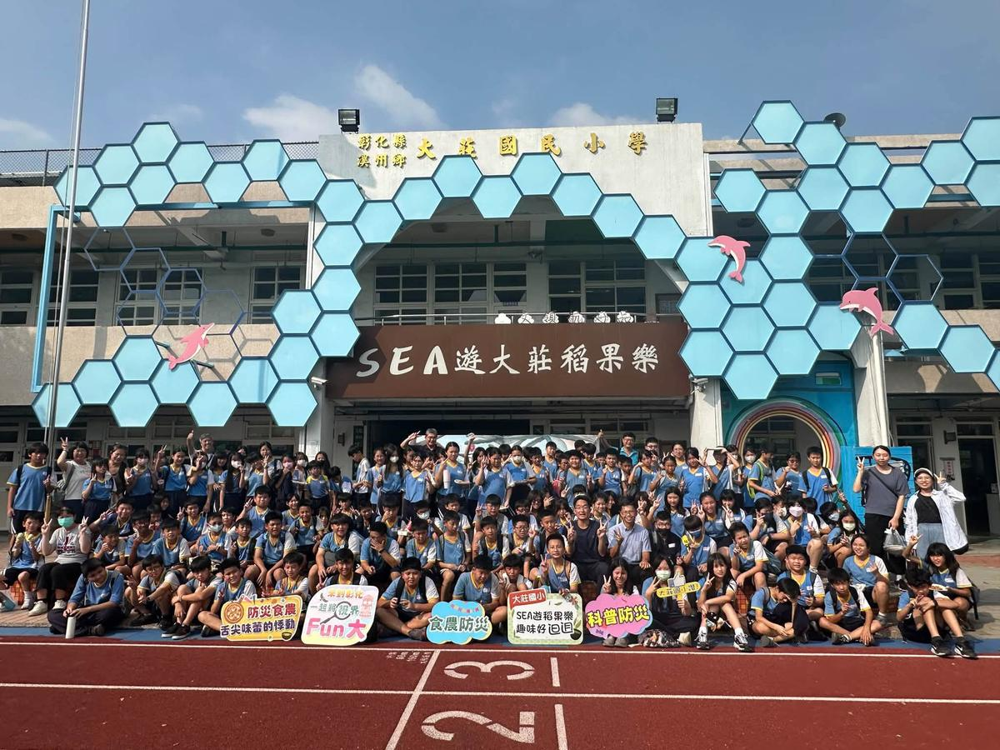
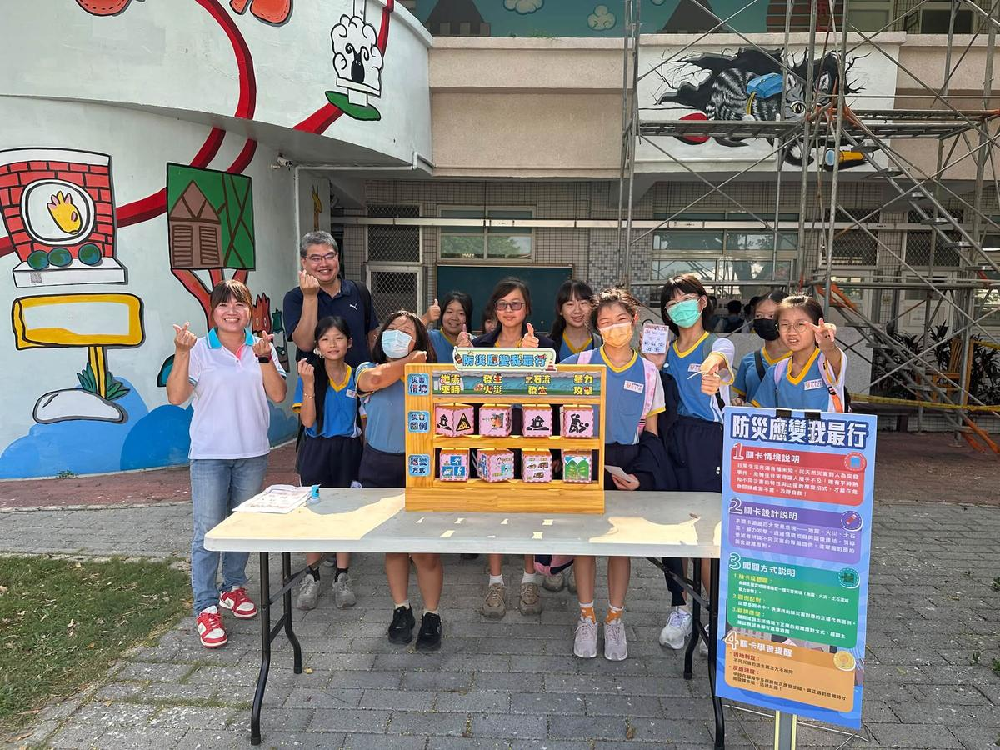
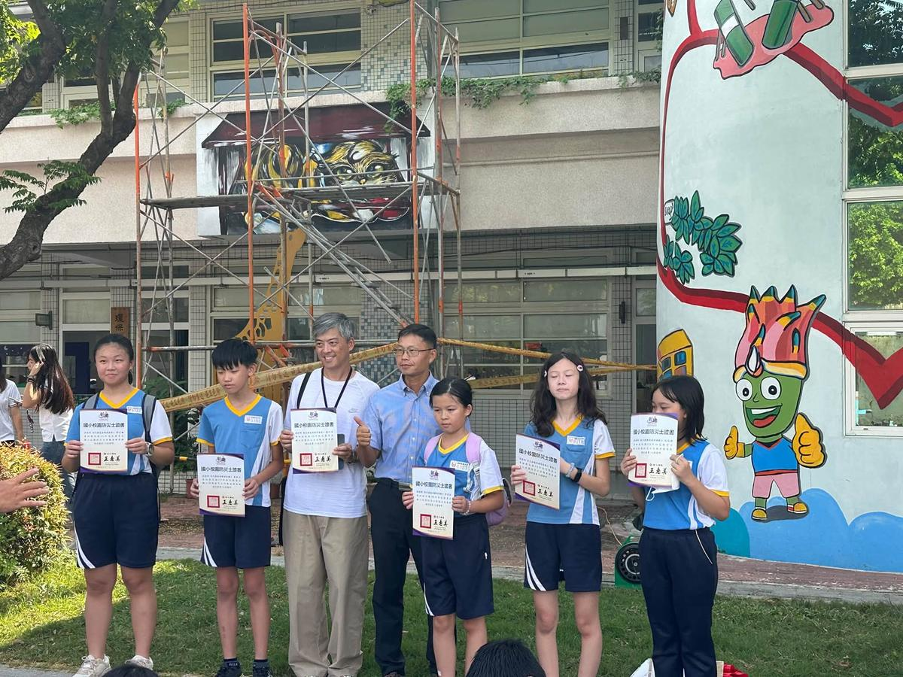

頂番與大莊的孩子，在「SEA 遊大莊稻果樂」校門前大合照


左：「防災應變我最行」關卡 右：通過考驗，開心領取證書
On September 24, 2026, Dajuang Elementary hosted its very first Little Campus Disaster Scouts study tour. Principal Wang Shun-Yi of Dingfan Elementary led nearly 140 sixth graders to our campus, where they joined about 20 Dajuang students for a full day of hands-on disaster-prevention learning.
Through challenge stations, food and farming, and science, the children practiced three big skills for any emergency: helping themselves, relying on themselves, and protecting themselves.
- 🏁Challenge Stations闖關
Ten stations tested what the young scouts knew about different disasters and how to respond. Thanks to Dajuang's strong volunteer team for running every station.
- 🍕Food & Farming食農
Using Xizhou's own black rice, students made their own oven-baked pizzas, learning how to feed themselves when a disaster strikes. Thanks to Wen-Wen and Hsiao-Mei for their guidance.
- 🧱Science科普
Students learned how faults and moving plates cause earthquakes, then used building blocks to build safe, earthquake-resistant buildings. Thanks to Teacher Mu-Fan.
A big thank-you to the whole Dajuang team for a long day's work and many days of preparation. Every piece of equipment was ready and in place, and when a power outage, a drinking-water problem, and surprises at the stations came up, the team handled them all calmly. It was disaster response in real life! Our 150-person disaster-prevention study tour came to a happy end.
115.9.24 首場小小校園防災士遊學體驗
🌟 歡迎頂番國小王舜儀校長帶領六年級近 140 位學生及大莊近 20 位學生體驗防災遊學，從闖關、食農、科普學習防災自救、自立、自護的能力。
🌟 闖關：10 道關卡考驗小小防災士對不同災害的認知與應變技能。感謝大莊強大志工團隊擔任關主讓學生通過考驗。
🌟 食農：結合溪州黑米手做窯烤 pizza，學習災時自給自足的能力。感謝雯雯、小美指導。
🌟 科普：認識斷層板塊運動，利用積木搭建安全耐震的建築。感謝慕凡老師指導。
🌟 感謝大莊團隊一日辛苦及連日準備，讓設備、器材都能精準到位，也順利應變跳電、飲用水、闖關各種突發狀況，真是名符其實的防災應變，今日 150 人防災遊學圓滿完成。
Tap 🔊 to listen · 點喇叭聽發音
An earthquake is a disaster, so we practice what to do before it comes.地震是一種災害，所以我們要在它來之前先練習怎麼應變。
The kids built block houses that stay strong in an earthquake.孩子們用積木蓋出遇到地震也不會倒的房子。
Each challenge station tested what the scouts knew about staying safe.每一道關卡都在考驗小小防災士的安全知識。
A volunteer gives time to help others, just like the helpers who ran our stations.志工是付出時間幫助別人的人，就像這次擔任關主的志工團隊。
We baked black-rice pizza in an oven made of clay.我們用土窯烤出黑米披薩。
Knowing what to do in a disaster helps you protect yourself.知道災害來時該怎麼做，就能保護自己。
Match the word to its meaning
把英文和中文配對
Matched 配對成功：0 / 6